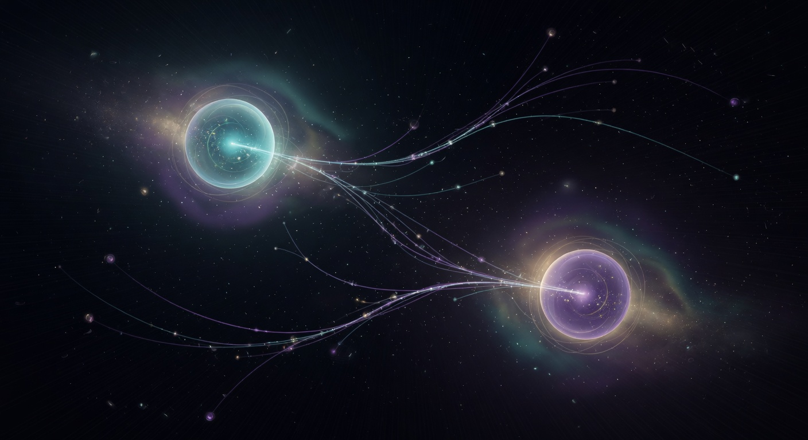

Enter the Quantum

The Witness and the Wave
In the famous double-slit experiment, electrons behave as waves — until they are observed. Then they become particles. Does reality require a witness? Ancient traditions placed pure awareness at the foundation of all manifestation.

Entangled Across the Void
Two particles can become linked so that measuring one instantly determines the state of the other — no matter the distance. Einstein called it spooky. The sages called the underlying reality one single fabric.

Born of the Void
The quantum vacuum is not empty. It seethes with virtual particles that flicker into and out of existence. From “nothing” the universe itself may have arisen. The Vedas described creation emerging from a state beyond existence and non-existence.

The Cosmic Hum
At the deepest level, quantum fields vibrate. Particles are excitations of these underlying fields — ripples in a cosmic ocean. The ancient seers declared that the entire universe arises from primordial vibration, the sound that is Om.